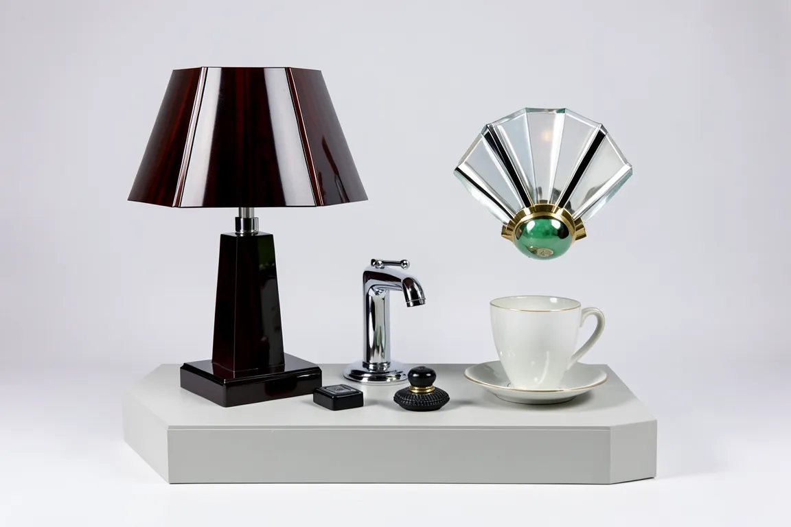

industridesign · 1925–1940 · også: Art deco-gjenstand, Style Moderne-gjenstand, Jazzalder-gjenstand
Rike, geometriske gjenstander fra jazzalderen: trappede former, vifter og solstråler i krom, ibenholt, lakk, speil og bakelitt, laget for hånd og med maskin for en byluksus.

Kjerneidé
Luksus kan være geometrisk: et sjeldent materiale, en presis maskinlinje og et dristig mønster gir en gjenstand som ser rik og moderne ut.
Designprinsipper
Bygg hver form av trappede trinn, en vifte, en solstråle eller en chevron; gjenta den tre til fem ganger.
Bruk sjeldent, mørkt tre som makassarebonitt og palisander med en høy fransk polering.
Par en mørk bunn med et lyst metall: krom, nikkel eller forgylt messing på ibenholt, svart glass eller lakk.
Skjær glass og speil i fasetter; etse eller frost glass i et geometrisk mønster.
Hold omrisset symmetrisk om en vertikal akse, med en sterk fot og en trappet topp.
Bruk bakelitt og andre nye plastmaterialer til knotter og kasser, støpt i en skarp, fasettert form.
Sett hvert mønster i en rytme av 3 til 5 like deler, og gjør hver flate til et speil eller en dyp glans.